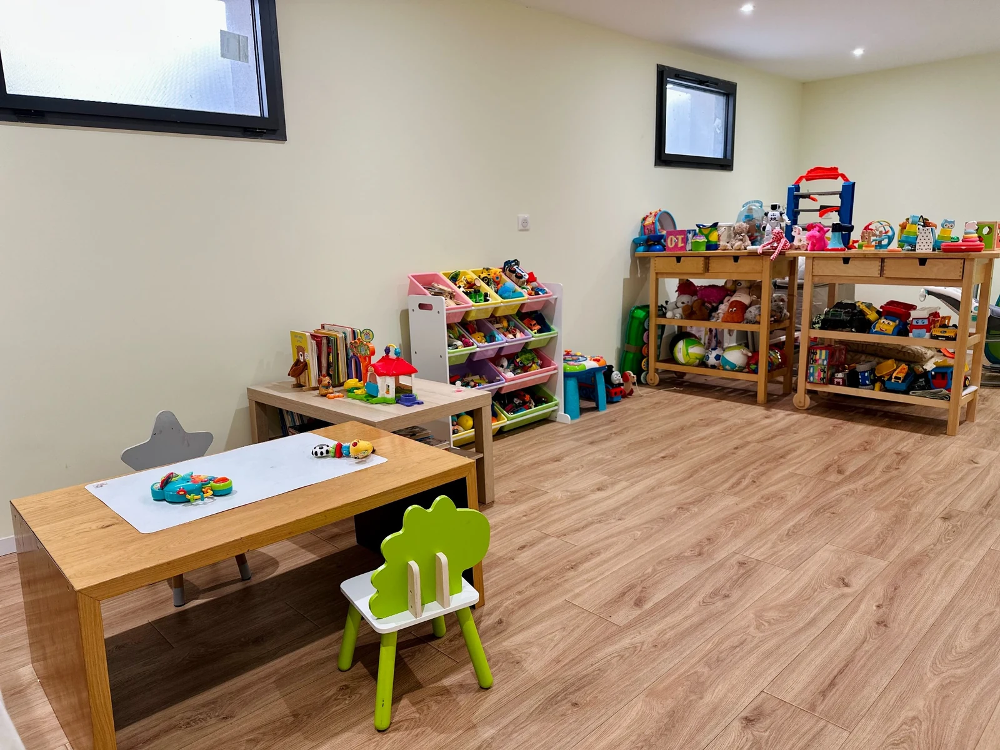

☀
Le matin
Un accueil calme pour commencer la journée en douceur.
Yicelia — assistante maternelle agréée à Mennecy
Un accueil simple, doux et familial, dans ma maison où chaque enfant grandit à son rythme. 3 enfants maximum.
♡ 1 place disponible actuellement

L'arrivée chez une assistante maternelle est une étape importante. L'adaptation se fait progressivement, avec les parents, pour permettre à l'enfant de découvrir la maison, les habitudes et les nouveaux repères en toute confiance.
Un accueil calme pour commencer la journée en douceur.
Jeux libres, comptines, lectures et petites activités adaptées à l'âge de chacun.
Des repas faits maison, simples, équilibrés et adaptés aux enfants.
Chaque enfant dort selon son rythme, dans un environnement calme et rassurant.
Un petit temps d'échange avec les parents pour raconter la journée.
Yicelia accueille au maximum 3 enfants. Ce petit groupe permet de garder une ambiance familiale, de respecter le rythme de chacun et d'être vraiment présente au quotidien.
Chaque enfant reçoit une attention personnalisée et bienveillante.
Le rythme de chaque enfant est respecté : sommeil, repas, besoins et émotions.
Un cadre chaleureux et simple, pour grandir en confiance.
La maison est pensée pour être calme, sécurisante et adaptée aux enfants. Des routines douces, des repères clairs et beaucoup de bienveillance pour que chacun se sente bien, chaque jour.


Vous avez des questions ou souhaitez échanger sur les besoins de votre enfant ? Je suis à votre écoute avec plaisir.